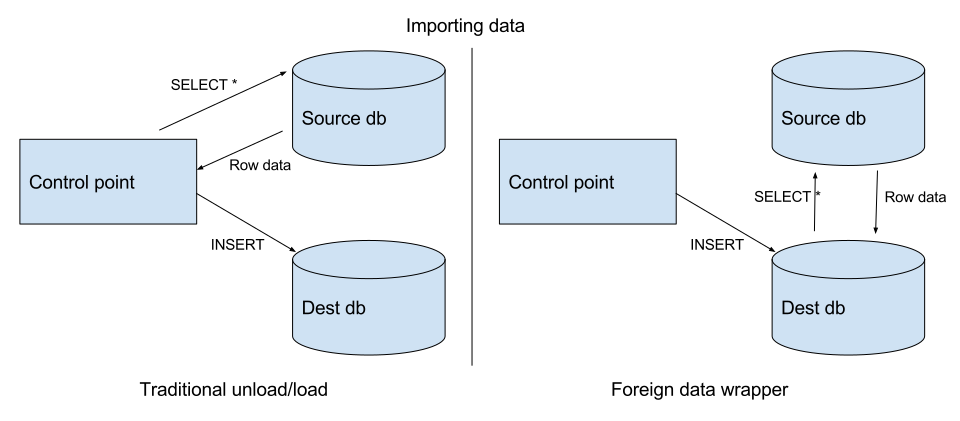

Moving data in bulk in and out of Postgresql
Postgresql is a database, and its primary goal is to be efficient when storing and querying information that is stored on disk. Same primary goal of many other databases, with the minor exception of in-memory databases. Postgresql however is a very flexible and extensible system, and in the last few years a lot of extensions came out, one of which is Foreign Data Wrappers.
With Postgres foreign data wrappers, it is very easy to move data in and out of it from other databases. This is particularly convenient when volumes of data are high and no business logic needs to be applied while copying data. An example scenario could be copying data from Redshift to Postgresql, or viceversa.
There are many reasons why using this approach makes it more efficient than a normal import/export:
- no intermediary system is needed to issue batched read/writes to databases
- no temporary storage of data
- no serialization/deserialization of data

All the steps above, in the case of FDW, are handled trasparently. The drawback of this method is that it uses a feature specific to Postgresql. Although this feature is based on an official extension of SQL (SQL/MED), there is not enough feature parity among database servers to make this portable.
Data vs Metadata
First important distinction is between data and metadata, which in this context means table structure (and table list). In Postgres there is a concept called schema: it is a namespace for tables within a database. By default all tables are placed in a schema called “public”. It is possible however to create tables in a given schema and associate permissions/do operations on schemas.
In our case, we can use schemas to map a local namespace to all foreign tables on a specific foreign server. In this way we do not have to specify the table structure everytime we do a SELECT on the foreign server.
Step by step example
Step zero is to enable all the extensions that we need:
CREATE EXTENSION postgres_fdw;
CREATE EXTENSION dblink;
Then as a first step, you need a connection and a user mapping. The first is essentially telling Postgres the location of the foreign server and the second are the credentials that a specific user can use to read from the remote server.
CREATE SERVER foreign_server
FOREIGN DATA WRAPPER postgres_fdw
OPTIONS (host 'blabla.us-east-1.redshift.amazonaws.com', port '5439', dbname 'dbname_here', sslmode 'require');
CREATE USER MAPPING FOR current_db_user
SERVER foreign_server
OPTIONS (user 'remote_user', password 'secret');
This is the bare minimum to start moving data back and forth. You can issue INSERT SELECT statements now, but without importing the foreign schema, you have to specify all column types.
INSERT INTO latest_load (id, table_name, loaded_at)
SELECT *
FROM dblink('foreign_server',$MARK$
SELECT id, table_name, loaded_at
FROM latest_load
$MARK$) AS t1 (
id varchar(256),
table_name varchar(256),
loaded_at timestamp);
If you are working with Postgres 9.5+ you can import the foreign schema in a local schema and use that to trasparently copy data back and forth between databases. As example, importing a schema from a Redshift database locally, you can issue these two commands:
CREATE SCHEMA redshift;
IMPORT FOREIGN SCHEMA public FROM SERVER foreign_server INTO redshift;
Not all foreign data wrappers have support for this, and also not all DBMS have the concept of schema. Mysql does not really distinguish between database and schema, while Postgres and Redshift do.
INSERT INTO redshift.latest_load VALUES ('abc', now(), 'blabla');
SELECT * FROM redshift.latest_load;
These operations are completely transparent now, as in they have the same form as when working locally. For more complex SELECTs, depending on the foreign data wrappers, you have the ability to push down WHERE clauses and local JOINs, decreasing the amount of network traffic the SELECT generates and improving the performance by orders of magnitude.
It is also possible to clone remote table structure locally, if the foreign schema has been imported.
CREATE TABLE a_table AS SELECT * FROM redshift.table_ccc;
That’s a run through of the most important ops. Hope it was useful!